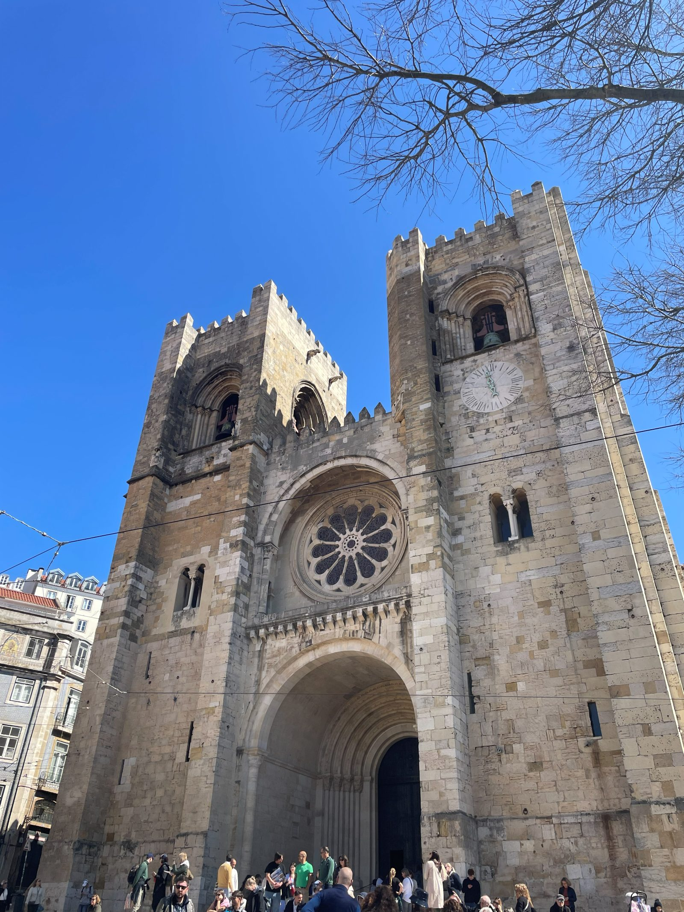
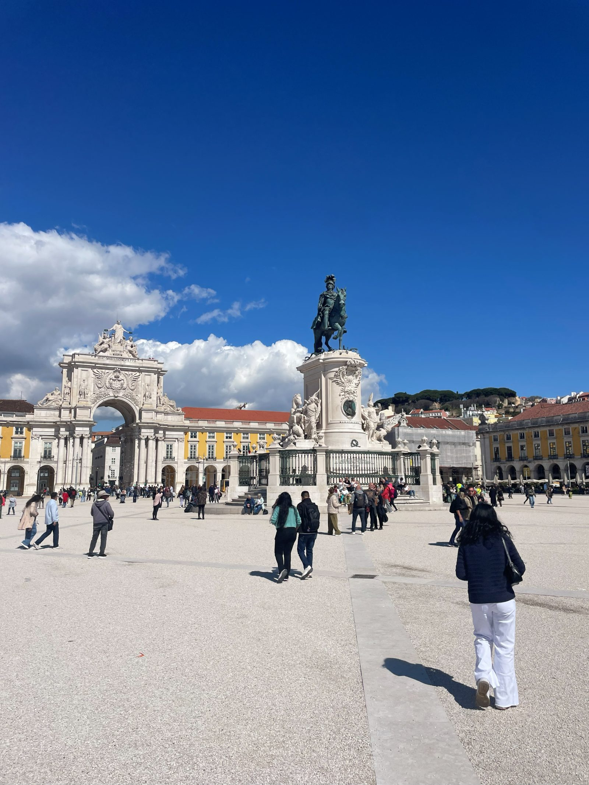
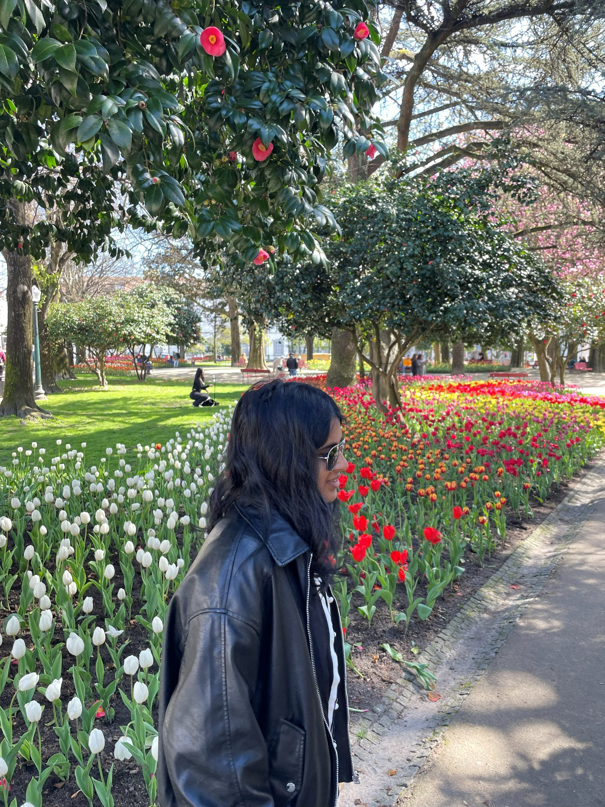
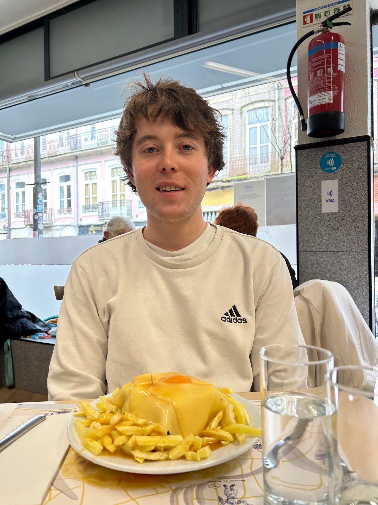
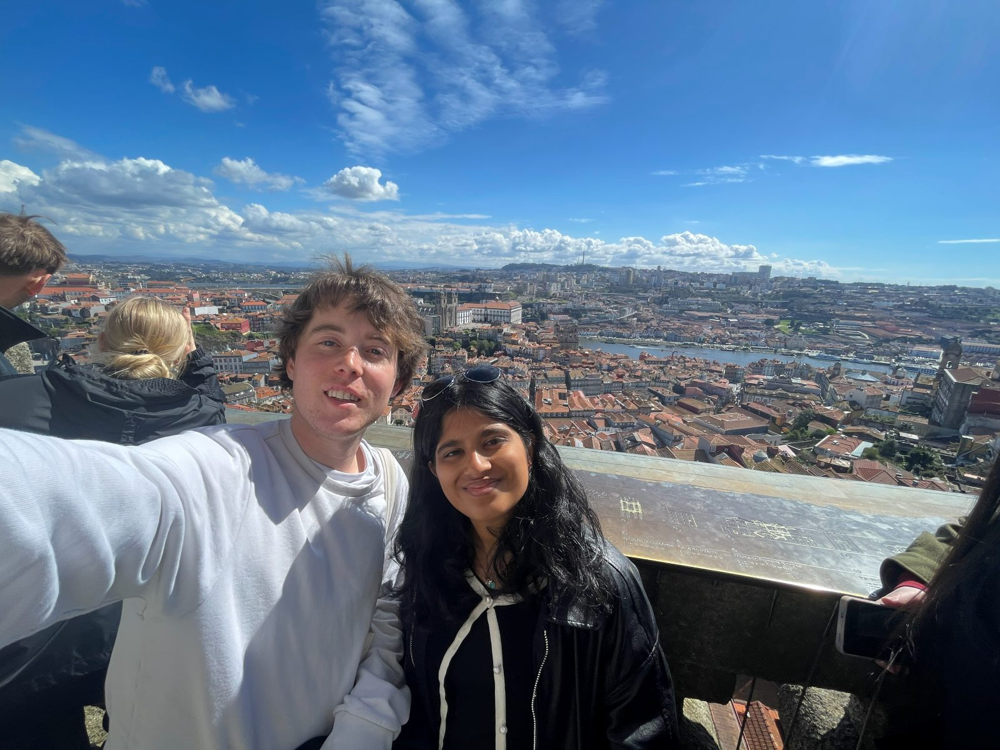
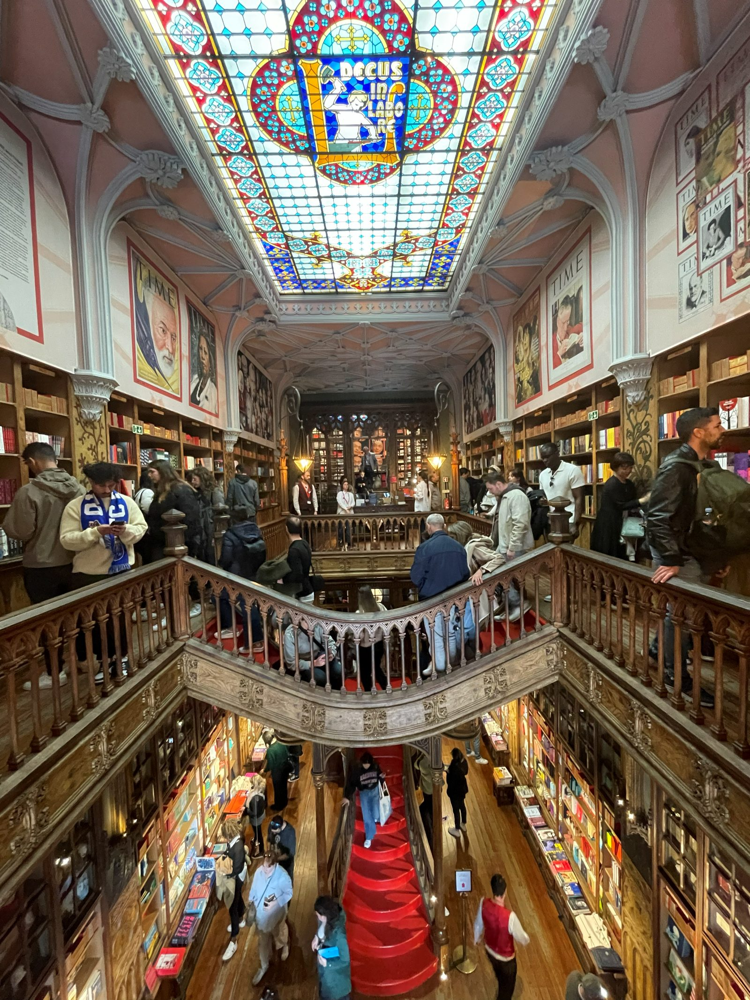

PORTUGAL-MANCHESTER
Friday (Lisbon)
- Got up at 3:30am for the 6am flight
- Took off at 6:15 and landed with a one hour time change at 8:30
- Stored our bags and went to the Sao Jorge Castle
- Crazy long line, minimum 30 minutes probably so we skipped it
- Went to Miradouro Portas do Sol and Santa Maria
-
1 / 2
- Nice viewpoints looking over Alfama and the water
- Saw the Lisbon Cathedral

- Walked around at the Praça do Comercio and the beach for a bit

- Bus to lunch at Taberna Sal Grosso
-
1 / 2
- Very good smoked pork belly, saffron rice, bread with roasted cheese and honey, and aubergines
- Everything was great here
- Bus to Manteigaria for Pastel de Natas
- Nice creamy pastries, very tasty
- Walked up to Miradouro de Sao Pedro de Alcantara
- Peaceful area overlooking the city and castle
- Took the bus back to the station to get our bags and check in before bussing to the boat tour
- Dora was supposed to check us in at 3:50 and then when we were almost there she said she couldn't until 4:30 which is too late for us
- She finally made it after a lot of back and forth texting with her and our host
- We had to Uber because of the check-in situation and ran to the dock for the boat tour making it just in time
- Sailed up and down the river with tidbits of information about the things we were passing every once in a while
-
1 / 3
- Drank wine and talked to the guide and people in the boat, very nice boat ride tour
- Went to Moona Chicken for dinner
- "Black Secret" chicken was very very spicy but also tasty
- Had soju, beer, fries, and kimchi as well
- Went and got souvenirs and to check out pink street and get Mahathi ginjinha shots in chocolate cups
- Waited 30 min for the bus back and went to bed
Saturday (Porto)
- Got up at 6:45 and showered before going to the station for our 8:09 train to Porto
- Arrived at 10:49 and took an Uber to Cafe Santiago

- They were closed so we saw some tulips and trees and McDonald's Imperial while we waited
- Got a Francesinha for lunch

- Very soggy and oily but still pretty tasty
- It's a sandwich with steak, ham, sausage, cheese, egg, and bread with fries
- Got tickets for Clerigos Tower and Livraria Lello

- Clerigos Tower had a cool view after 10-15 minutes of walking up stairs
- Livraria Lello was very pretty and Mahathi got a book for Alehkya

- Cool staircase in the middle
- Walked to the Jardins Palacio de Cristal
-
1 / 3
- Peacocks, tulips, and nice natural areas
- Saw some peacocks open up their feathers for us
- Walked through a market area to get to Sandeman Cellars for the wine tour
-
1 / 3
- Learned about how port wine is made and why it's so different
- Walked through the cellars with all of their different kinds of aging wine
- Got to taste some after
- Walked back across the bottom of the bridge to Ta Berna Wine and Tapas
- We got cod fritters and stuffed mushrooms and drinks
- Walked across the top of the Ponte Luis I bridge and saw an old castle thing
-
1 / 2
- Took the 7:50 train back to Lisbon, showered, and slept at around midnight
Sunday (Manchester)
- Woke up and left by around 8:30
- Flight to Manchester was delayed from 10:20 to 11:00ish
- Landed in Manchester and took an Uber to and back from Old Trafford
-
1 / 2
- Just went there and straight back to the airport lounges
- Flight back to Berlin was delayed one hour from 6:10 to 7:10
- Made it home and slept